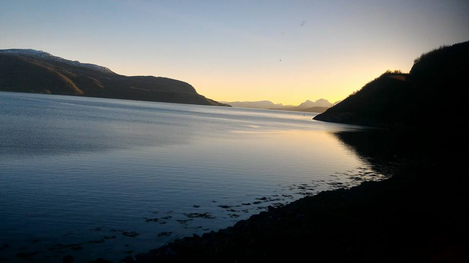
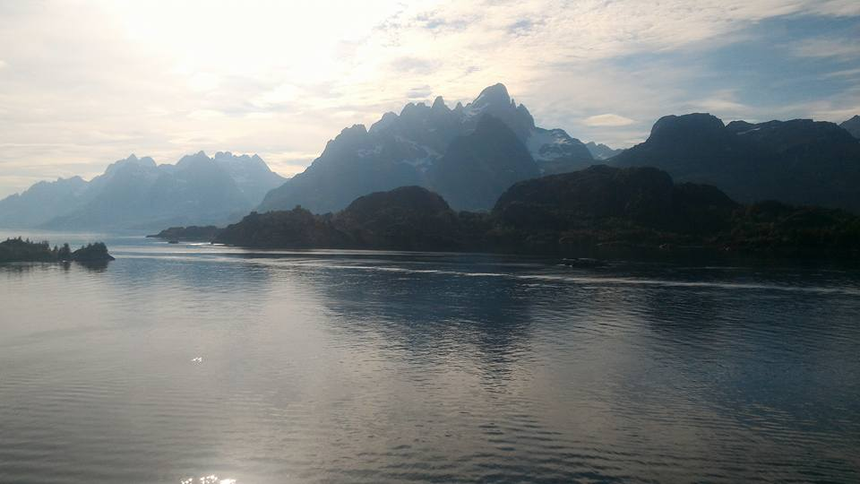
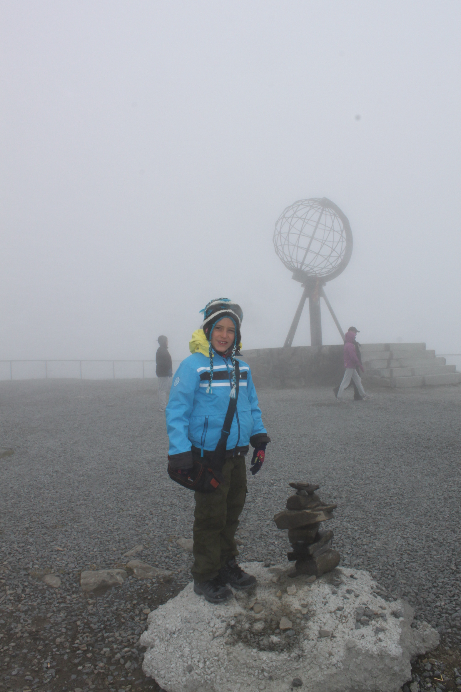
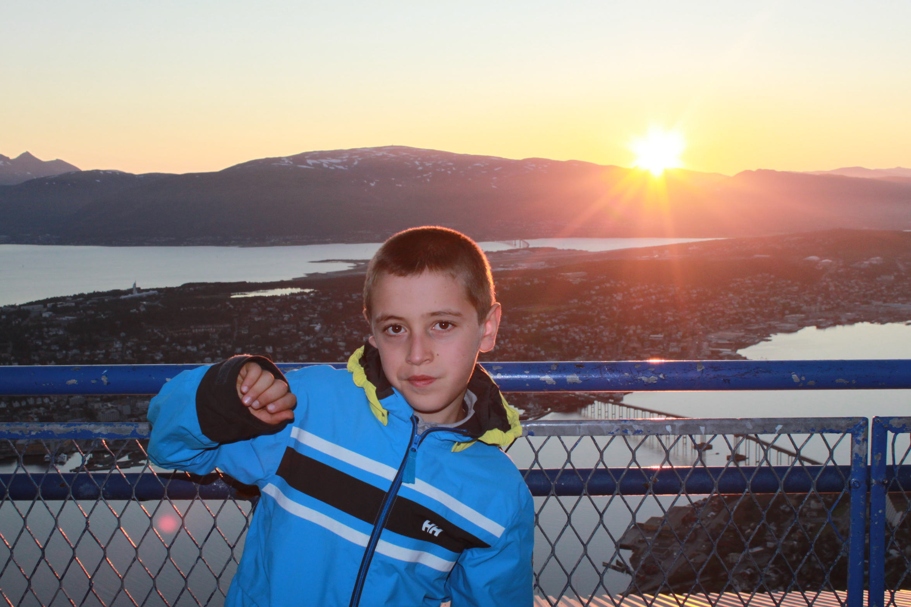
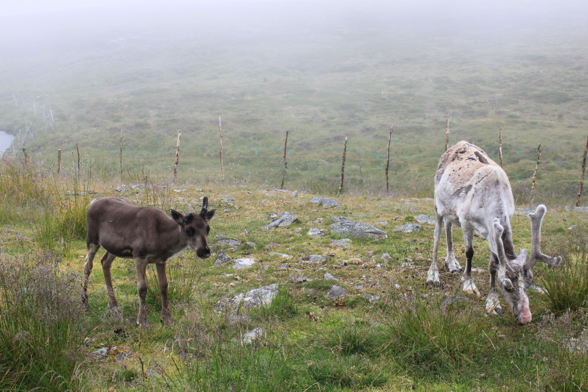

Норвежките фиорди – любов от пръв поглед
Публикувана на 19 януари 2021 година

Лофотенските острови
Посещавал съм Норвегия три пъти досега и всеки път я преоткривам отново и отново по нов начин. Смело мога да заявя, че съм посетил едни от най-красивите кътчета на тази страна. От столицата Осло през типичните скандинавски градове Берген, Трондхейм, Северният полярен кръг и Тромсьо, неслучайно наричан "Париж на Севера", до най-северната точка на континентална Европа - нос Нордкап. Едно изключително и незабравимо преживяване сред най-красивите заливи на света - фиордите в "Страната на среднощното слънце". Ето и една малко по-нетипична, но изключително красива дестинация – островите в норвежкия архипелаг Лофотен. Мястото не е много популярно сред туристите и затова, пътешественико, ще можеш да му се насладиш изцяло.
Норвегия - страна на фиорди, елени и красиви гледки
Фиордите в Норвегия - безкрайна картина
Представи си, че сте нависоко. Че около теб е тихо. Има много вода и безкрайна, необятна шир, която дори не можеш да обхванете само с един поглед. Светът изобилства с подобни места. Но една северна държава има свой собствен отличителен белег. Досетихте ли се вече? Точно така – държавата е Норвегия, а днес ще ви разкажа за едно от нейните богатства – безбройните фиорди. Щом ги видят, хората някак си успяват да се влюбят в тях от пръв поглед. И има защо. Ето част от снимките ми от Норвегия, които със своята красота ще те накарат да поискаш да си точно там в този момент.
Лофотеснките острови - зеленина, море и красота в едно
Нос Нордкап - най-северната точка на континентална Европа

Берген - столицата на фиорди
Залез в Тромсьо, "Париж на Севера", където слънцето никога не залязва
Северни елени - древно присъствие в норвежките планини
Северните елени - величествени и любвеобилни
Норвегия е последното убежище за някои от най-интригуващите диви животни в Европа. Докато може да се натъкнете на полярни мечки (на Шпицберген), арктически лисици, евразийски рис, росомаха, северни елени и други видове, специалните сафарита в норвежката вътрешност ще ви отведат до мускусния вол, както и доста обичания лос. По крайбрежието птичият живот на Норвегия е богат и изпълнен с интерес, докато изгледите за наблюдение на китове са основна част от крайбрежието на Nordland, особено около Вестеролен и Тромсьо. Можете също да видите моржове в Шпицберген.